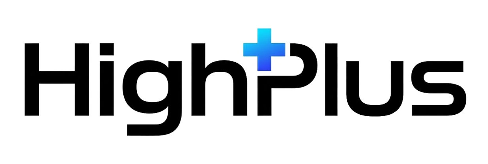

우리 병원을 처음 찾는 초진 환자는 검색으로 병원을 정합니다. 그런데 올해부터 그 검색 화면이 달라졌습니다. 네이버가 치료 목적 키워드에서 카페나 블로그 글보다 병원이 직접 운영하는 홈페이지 문서를 먼저 보여주기 시작했고, 구글과 AI는 병원 도메인에 쌓인 정보를 근거로 환자 질문에 직접 답을 주고 있습니다.
블로그를 기본으로 두고 채널을 얹던 방식은 이 변화 앞에서 한계가 분명해졌습니다. 그래서 저희는 이제 워드프레스 홈페이지를 기본으로 두고, 그 위에 필요한 채널을 하나씩 얹는 순서로 진행합니다. 엘리트안과에 왜 이 순서가 맞는지, 함께 했을 때 무엇이 달라지는지 아래에 정리했습니다.
저희는 매일 병원 검색어를 직접 넣어보면서 검색 화면이 어떻게 바뀌는지 확인합니다. 맡겨주시면 엘리트안과 키워드로 확인한 결과를 매달 정리해 보내드립니다.
병의원 검색 시장에서 올해 바뀐 것 네 가지
라식, 백내장처럼 치료 목적으로 검색하는 키워드에서 네이버 통합검색 상위 문서를 하나씩 열어보면, 절반 이상이 병원 홈페이지 문서입니다. 블로그와 카페 글은 합쳐도 그 절반에 못 미칩니다. 네이버가 의료 정보에서 신뢰도 있는 문서를 우선 노출하는 방향으로 움직이고 있고, 병원이 직접 운영하는 홈페이지 문서가 그 대표적인 신호로 읽히기 때문입니다.
안과는 피부과나 성형외과처럼 전후 사진으로 신뢰를 얻기 어려운 진료입니다. 그래서 안과 마케팅은 결국 전문성을 보여주는 문서의 정교함에서 승부가 갈립니다. 그 문서가 올라가는 자리가 지금은 블로그가 아니라 홈페이지입니다.
챗GPT나 제미나이에 "신촌 드림렌즈 잘하는 안과"라고 물어보는 환자가 늘고 있습니다. 이 AI들은 주로 구글에 쌓인 정보를 근거로 답합니다. 네이버 플레이스와 블로그는 네이버가 소유한 화면이라 병원이 구조를 바꿀 수 없고, 구글과 AI가 근거로 삼기에도 약합니다.
워드프레스로 만든 홈페이지는 병원 도메인 안에 있어서, 진료과목과 의료진, 진료시간, 자주 묻는 질문을 구글이 읽는 구조화 데이터(스키마)로 직접 심을 수 있습니다. 홈페이지 자체가 AI가 인용하는 출처가 됩니다.
임대형 홈페이지는 병원을 소개하는 데서 끝납니다. 검색엔진이 읽어가는 구조를 직접 손볼 수 없고, 글을 쌓아도 병원 자산으로 남지 않습니다. 워드프레스는 진료별 상세 페이지, 의료진별 페이지, 칼럼을 계속 쌓을 수 있고, 예약이나 상담 기능도 필요할 때 붙일 수 있습니다.
환자는 검색할 때마다 다른 질문을 갖고 들어옵니다. 그 질문에 맞는 답을 홈페이지 안에 각각 심어두면, 질문 단위로 상위노출이 가능해집니다. 백내장 초기 증상을 묻는 사람과 수술 시기를 묻는 사람이 각각 다른 페이지로 들어오는 구조입니다.
서버와 도메인, 보안 업데이트, 플러그인 충돌, 백업과 오류 대응이 계속 따라옵니다. 그리고 무엇보다 문서가 꾸준히 쌓여야 합니다. 이 운영이 뒷받침되지 않으면 홈페이지는 다시 소개용으로 돌아갑니다.
초진이 들어오는 경로를 하나씩 확인했습니다
엘리트안과는 신촌에서 드림렌즈(소아 근시 관리), 백내장, 안구건조증, 익상편, 망막질환에 더해 오타모반, 각막문신 같은 특수 진료까지 폭넓게 보고 계십니다. 원장님별로 전문 분야가 뚜렷하게 나뉘어 있어서, 진료별 페이지와 의료진별 페이지로 나눠 쌓는 워드프레스 구조에 그대로 들어맞습니다.
특히 오타모반이나 각막문신처럼 다루는 병원이 많지 않은 진료는, 검색했을 때 후보에 오르는 병원 수 자체가 적습니다. 이 진료를 설명하는 페이지가 홈페이지 안에 있는 병원과 없는 병원의 차이가 그대로 문의로 이어집니다. 지금 엘리트안과는 이 진료들을 실제로 하고 계시는데도, 네이버 밖에서는 검색되지 않습니다.
1단계만으로도 시작됩니다
엘리트안과 도메인으로 홈페이지를 만들고, 그 안에 진료별 페이지와 의료진별 페이지, 칼럼을 쌓습니다. 기획, 카피, 디자인, 개발부터 구축 이후 운영까지 저희가 맡습니다.
홈페이지 칼럼과 짝을 이루는 블로그 글을 네이버에 발행합니다. 같은 주제를 홈페이지 문서와 블로그 글 두 형태로 두면 한 검색어에서 자리를 두 개 확보합니다. 지금 운영 중인 블로그는 원장님 개인 일지 성격을 살리고, 정보성 콘텐츠는 저희가 따로 쌓습니다.
플레이스는 이미 강한 자산입니다. 리뷰와 사진이 계속 쌓이도록 관리하고, 홈페이지 링크와 진료 정보를 채워 순위 변화는 리포트로 드립니다.
여기까지 = 워드프레스 + 블로그 + 플레이스
구글 지도에 병원을 등록하고 홈페이지 도메인과 연결한 뒤, 꾸준히 게시글을 올려 구글 검색에 자리를 잡습니다. 여기에 홈페이지와 블로그에 발행한 글로 50초 내외 원장님 AI 영상을 만들어 유튜브에 올리고, 그 영상을 다시 홈페이지 글 안에 넣습니다. 별도 촬영은 필요하지 않습니다.
유튜브도 구글 소유라 두 개를 같이 채우면 구글 검색과 AI 답변에 함께 잡힙니다. 그래서 저희는 이 둘을 하나로 묶어서 진행합니다.
여기까지 = 워드프레스 + 블로그 + 플레이스 + 구글 서칭
피드 톤앤매너를 설계하고 카드뉴스와 해시태그를 관리합니다. 앞 단계에서 발행한 홈페이지 칼럼과 유튜브 영상을 카드뉴스 형태로 재가공해 발행합니다.
릴스와 숏폼 제작은 포함되지 않습니다
채널을 따로따로 맡길 때와 결과가 다른 이유
홈페이지 칼럼 1편 → 네이버 블로그 글 → 원장님 AI 영상(유튜브) → 구글 게시글 → 인스타그램 카드뉴스. 같은 주제가 네이버 통합검색의 홈페이지 문서 자리, 블로그 자리, 구글 검색, 유튜브, AI 답변에 동시에 걸립니다. 원고를 다섯 번 쓰는 것이 아니라 한 번 쓰고 다섯 자리를 채우는 구조입니다.
홈페이지, 블로그, 유튜브, 구글 프로필이 서로 링크로 묶입니다. AI가 답을 만들 때 여러 채널이 같은 병원을 가리키면 인용 가능성이 올라갑니다.
리뷰 1,000건이 만든 플레이스 신뢰가 홈페이지 스키마와 구글 프로필로 옮겨집니다. 새로 신뢰를 만드는 것이 아니라, 있는 신뢰를 검색이 읽을 수 있는 형태로 바꾸는 일입니다.
백내장 초기 증상, 드림렌즈 관리법, 오타모반 레이저처럼 환자 질문마다 홈페이지 페이지와 블로그 글이 짝으로 붙습니다. 검색어 하나에 자리 두 개씩 늘어납니다.
하이플러스컴퍼니는 의료인이 운영하는 회사입니다. 홈페이지 문서부터 카드뉴스까지 같은 팀이 의료법을 지키며 쓰기 때문에, 채널마다 말이 달라지는 일이 없습니다.
위 단계와 별개로, 요청하실 때만 진행합니다
구성과 발행 주기, 금액은 상담 후 병원 상황에 맞춰 안내드립니다.
검색 노출은 검색어와 경쟁 상황에 따라 계속 변동되므로 특정 순위와 성과는 보장하지 않습니다.
주식회사 하이플러스컴퍼니, 문의 010-2622-3398, highplus.work